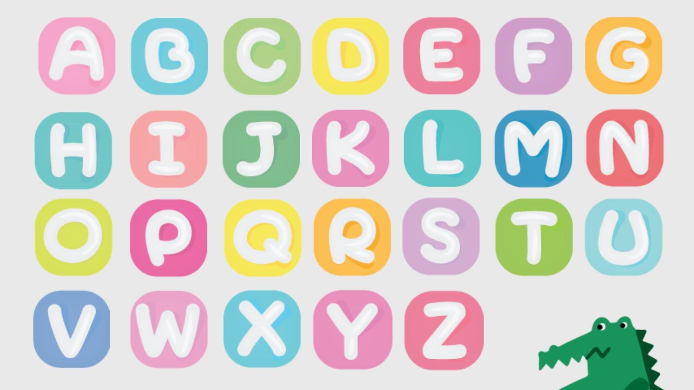
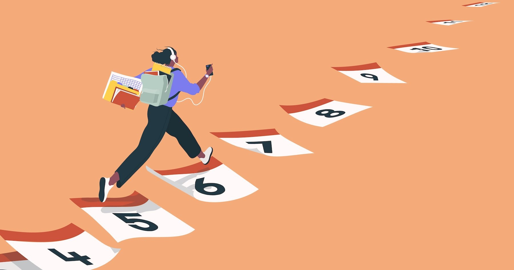

Hello! Welcome to the mini course of English for beginners.
Привет! Рады приветствовать вас на нашем мини-курсе по изучению английского. Можно ли выучить язык за 4 недели?
Да, можно. За 4 недели вы сможете освоить базовый материал по английскому языку.
Для вас мы подготовили планер, рассчитанный на 4 недели. Здесь вы можете изучить с чего начать освоение языка, какие темы следует разобрать и на каком этапе, советы и лайфхаки для начинающих.
Well? Let’s get started!
Прежде чем начать разбор материала, подумайте, для чего вам нужен английский язык. Если вы не преследуете конкретную цель, а английский нужен «просто так», то скорее всего ничего у вас не получится.
Нужно видеть смысл в своей работе, иметь мотивацию и стремится к исполнению желаний.
Поразмышляйте и запишите на листочке мини-сочинение «Зачем я учу английский язык».
Итак, какие же цели могут быть:
- Путешествие
- Работа, будущая карьера
- Общение с иностранцами
- Учеба
- Просмотр фильмов и сериалов в оригинальной озвучке
Цели могут быть разные, но главное, чтобы они были исполнимы и хорошо вас мотивировали!
Итак, с мотивами к изучению языка мы разобрались, переходим к английскому языку.
На первом этапе вам нужно понять основы языка, научиться читать и писать, говорить несложные предложения и уметь их правильно строить.
1 шаг. Начинаем с алфавита
Как бы банально это не звучало, но с алфавита начинается весь путь.
Английский алфавит учится достаточно легко, поскольку создан он на основе латинского и состоит всего лишь из 26 букв.
Когда вы изучите буквы, уже с легкостью можете писать и произносить слова.
Некоторые буквы звучат не так как в алфавите, поэтому внимательно изучите звуки (sounds).
Фонетика – один из сложных аспектов английского языка. Но в интернете есть множество ресурсов для новичков.
С первых дней учимся правильно писать и читать на английском языке!
2 шаг. Построение предложений
На данном этапе вам необходимо понять основы построения английских предложений и, особенно, порядок слов в предложении и инверсию.
Особое внимание уделите отрицательным и вопросительным предложениям. Неплохо будет также знать и принципы построения отрицательных вопросов.
3 шаг. Времена
Кто-то советует времена английского языка оставить на потом, НО чем раньше вы разберетесь со всеми временами, или хотя бы с часто используемыми, тем легче вам будет в дальнейшем.
Всего в английском языке 12 временных форм, а также 8 времен в пассивном залоге. Не загружайте свой мозг сразу всеми, начните с самых простых:
Present Simple
Past Simple
Present Continuous
Future Simple
Past Continuous
Present Perfect
На первое время этого вам хватит «с головой».
4 шаг. Числительные
Научитесь считать до 10, затем до 100, а потом и до 1000. Обратите внимание на года, они читаются по-разному.